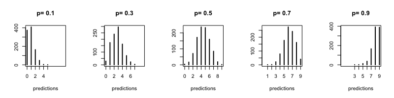
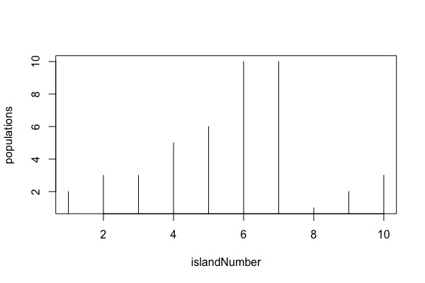
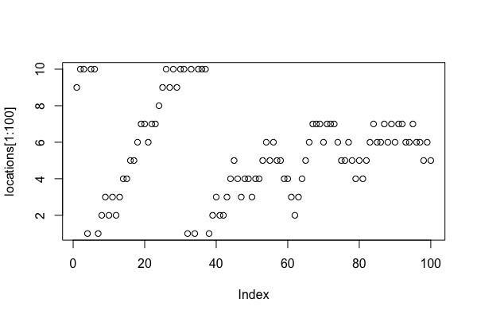
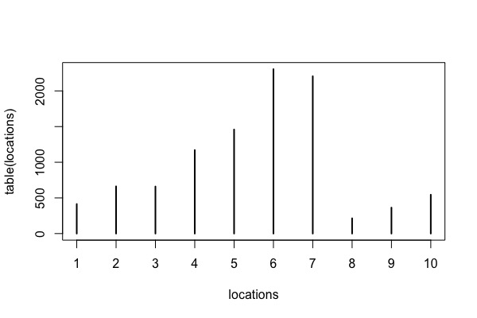
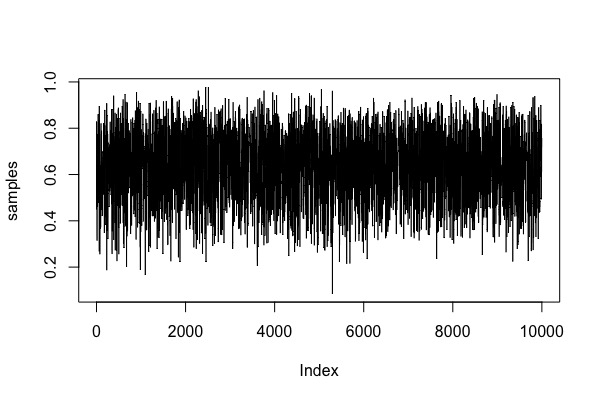
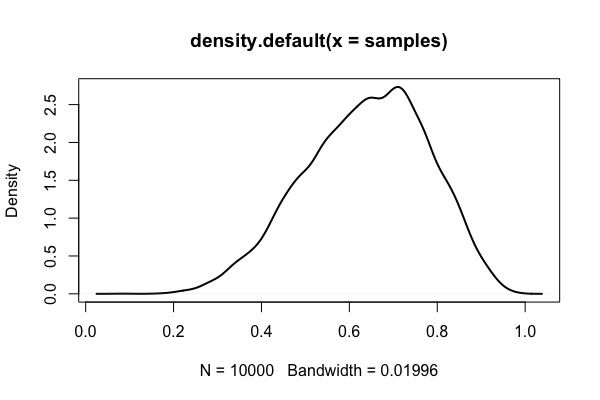
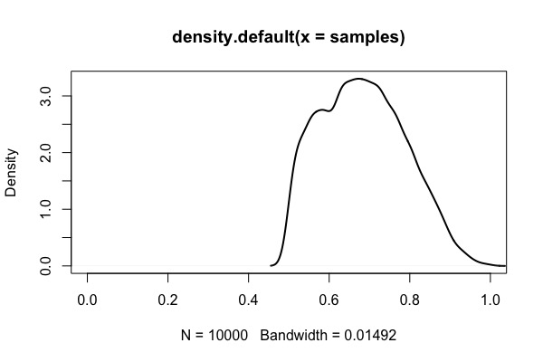
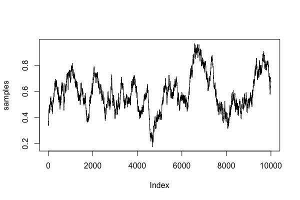
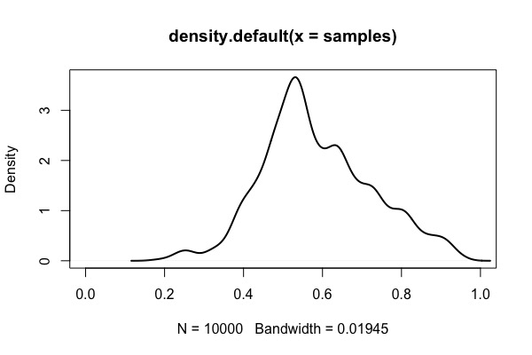

Week 10 lecture notes - PSYC 5316
Last week, we introduced Bayesian modeling through sampling the posterior. This week, we will finish up our discussion of the modeling process by talking about using the model for prediction.
Evaluating Bayesian models
Last week, our computations gave us information about the plausible values of \(p\) for our binomial model. For example, we computed an 80% HPDI for \(p\) to be [0.47,0.83], which means that \(p\) lies between 0.47 and 0.83 with probability 0.80. In fact, we estimate the entire posterior distribution (i.e., the probability values for all \(p\) between 0 and 1).
We can now take this information and "go the other way". That is, we can use the estimated parameter values \(p\) and estimate how likely a given data observation would be. That is, our model is generative in the sense that we can generate predictions from the model.
To illustrate, let's assume that \(p=0.7\). The following R code will perform 1000 simulations of our experiment (as a reminder, remember that we started with the game of tossing a globe 9 times and recording W or L..the rbinom will count the number of "successes" as water landings). Then, we'll plot a very simple type of histogram to show the relative frequency of each possible number of outcomes (0-9).
predictions = rbinom(1000, size=9, prob=0.7) plot(table(predictions), xlim=c(0,9))

Note that with \(p=0.7\), we still get quite a large range of possible outcomes. However, the outcomes \(x=6\) and \(x=7\) are still the most frequent (as we would expect, since 70% of 9 is 6.3).
As an exercise, you should play around with different values of \(p\), ranging from small values (e.g., \(p=0.1\)) to larger values (e.g., \(p=0.9\)). What changes about the distribution of predictions?
The R code below will show how the distribution of predictions changes for \(p\) from 0.1 to 0.9:
par(mfrow=c(1,5))
Ps = c(0.1,0.3,0.5,0.7,0.9)
for (i in 1:5){
predictions = rbinom(1000, size=9, prob=Ps[i])
plot(table(predictions), xlim=c(0,9), ylab="", main=paste("p=",Ps[i]))
}
par(mfrow=c(1,1))

However, our estimate for \(p\) is a distribution of values..not a single value. Thus, we need to incorporate our uncertainty for \(p\) in our prediction as well. The way to do this is through the posterior predictive distribution.
Basically, the idea is as follows. From the figure above, we can see that as \(p\) increases from 0 to 1, the peak of the predictive distribution shifts from the low end \(x=1\) to the high end \(x=9\). However, from our posterior distribution of \(p\), we know that the probability that \(p\) lies on either of these ends is very small. Thus, we need to incorporate this knowledge into our predictive distribitution.
Essentially, we need to form a weighted average of predictions. Predicted observations on the low end (\(x=0,1\)) come from small values of \(p\), which are not very common in our posterior distribution. Similarly, predicted observations on the high end (\(x=8,9\)) come from large values of \(p\), which are also not very common in the posterior distribution. When we weight the likelihood of the various observations by the relative posterior probabilities for \(p\), we get a result that we call the posterior predictive distribution. The math can be complicated, but the R code is simple:
predictions = rbinom(1000, size=9, prob=samples) plot(table(predictions), xlim=c(0,9))

Notice how the only bit of code that we changed is the prob value. In the above samples, we used a fixed value of \(p\). In the posterior predictive distribution, we set \(p\) to be a random variable that is shaped like our posterior distribution for \(p\). Since we approximated this distribution with samples earlier, we can simply set prob=samples to accomplish this.
Notice how the posterior predictive distribution peaks around 6, which matches with our observed data (remember, we saw \(x=6\) water landings in our example). Thus, we can conclude that the model is adequate in the sense that it predicts what we've already seen. This predictive adequacy is a fundamental part of Bayesian modeling, and it is called a posterior predictive check.
Next step: MCMC sampling
So far, we have talked about how to construct a Bayesian model. We can summarize this into the following steps:
- We begin with a data story; that is, we hypothesize a process by which our data might have arisen. This results in a likelihood function.
- We then decide on a prior, which represents our prior knowledge.
- Then, we use Bayes theorem to update our model by feeding it the data. Technically, this amounts to computing a posterior by multiplying the prior and the likelihood. Computationally, we use sampling to accomplish this.
- Once we estimate our posterior distribution, we check our model by generating a posterior predictive distribution, which incorporates both data uncertainty as well as parameter uncertainty into a single distribution. We compare this posterior predictive distribution to our observed data; if the observed data match what we would expect from the model (based on the posterior predictive), we can conclude that our model does an adequate job of describing our data.
We will finish our intro to Bayesian modeling by discussing a more modern method of posterior sampling known as Markov chain Monte Carlo sampling.
The Metropolis algorithm
MCMC methods work by taking random samples from the posterior. The MCMC method we will discuss is called the Metropolis algorithm. It works by taking posterior samples in such a way that more time is spent wherever the posterior distribution is more dense. In the long run (i.e., after many steps), the distribution of samples will then form a very good approximation to the actual posterior distribution.
To illustrate how the algorithm works, I take the approach used by Richard McElreath and describe a fictional story involving a king who wishes to travel around the islands in his kingdom.
King Markov ruled over an archipelago consisting of 10 islands, each arranged in a circle. His main obligation was that the time spend visiting the people of each island should be proportional to the population of the island. That is, if island 1 had twice as many people as island 2, then he should spend twice as many days on Island 1 as compared to Island 2.
An easy way to accomplish this would be to simply have a list of each Island's population. However, the king had no use for such trivialities, and thus required his cabinet to develop a daily travel plan that would satisfy his obligation without having to remember or write down any island's population.
Senator Metropolis (an esteemed member of the cabinet who is also a very capable applied mathematician) developed the following algorithm:
- Whereever the King is, each week he needs to decide between staying put for another day, or moving to one of the two adjacent islands. To decide his next move, he flips a coin.
- If the coin turns up heads, the King considers moving to the adjacent island clockwise. If it turns up tails, he considers moving counterclockwise. This is called the proposal island.
- To decide whether he moves to the proposal island, he uses a rather interesting random sampling procedure. He collects a number of white stones to represent the population of the current island, and a number of black stones to represent the population of the proposal island. Then, he does the following:
- if the number of black stones exceeds the number of white stones (that is, the relative population of the proposal island is larger than the current island), he always moves to the proposal island.
- if the number of black stones is less than the number of white stones, he, he removes a number of white stones equal to the number of black stones. For example, if he had 4 black stones and 6 white stones, we would then remove 4 white stones to end with 2 white stones. In other words, the ratio of black/white stones would be 4:2.
- finally, he reaches into the bag and pulls a stone. If it is black, he moves to the proposal island. If it is white, he stays.
Believe it or not, this algorithm works! To get the hang of it, we will try it in class for a few cycles. Then, we will use R to see how the algorithm works in the long run.
The following series of R code cunks will demonstrate the long-run behavior.
First, we define the population of each island. This is entirely arbitrary, and I invite you to play around with the values in population.
islandNumber = 1:10 populations = c(2,3,3,5,6,10,10,1,2,3) plot(islandNumber, populations, type="h")

Now the algorithm is instantiated below. Please try to read the code in light of the algorithm as presented above. The key is that there is a random proposal island selected, and then we have to decide whether to "stay" or "go", which is done by a "coin flip" that is biased to come up heads according to the ratio of population densities (the so-called "acceptance ratio").
(also note that there is an extra step for THIS situation whereby we need to make the island chain circular..this won't be relevant to any other of the situations we talk about..it is simply to make this example work!)
# begin recording locations
N=10000
locations = numeric(N)
locations[1] = sample(1:10,1) # random starting place
# loop that defines Metropolis algorithm
for (i in 2:N){
# take random walk either left or right
proposal = locations[i-1] + sample(c(-1,1), 1)
# make chain of islands circular
if (proposal==11){proposal=1}
if (proposal==0){proposal=10}
# compute acceptance ratio (ratio of pop densities)
current = populations[locations[i-1]]
proposed = populations[proposal]
acceptRatio = min(1, proposed/current)
# move or stay according to acceptance ratio
makeStep = rbinom(1, size=1, prob=acceptRatio)
if (makeStep==0){
locations[i]=locations[i-1]
}
else{
locations[i]=proposal
}
}
The next two plots will how us that everything worked. First, we plot the first 100 days worth of samples:
plot(locations[1:100])

Next, we plot the proportion of time spent on each island. Notice how it closely resembles the original population density plot above. Magic!
plot(table(locations))

Using the Metropolis algorithm: the globe-tossing example
Now we are in a position to apply this new MCMC method to estimating the posterior distribution for \(p\) in our globe-tossing example. Recall that \(p\) represents the proportion of water on the globe. Also recall that we observed 6 "W" outcomes out of 9 globe tosses.
To construct the Bayesian model, we need the following two things:
- the likelihood (the data story) – we suppose that our data is generated by a binomial likelihood. In symbols, we write:
\[ x \sim \text{Binomial}(p) \]
- the prior for \(p\) – as before, we will use a uniform prior to start. In symbols, we write:
\[ p\sim \text{Uniform}(0,1) \]
By Bayes' Theorem we know that the posterior is found by multiplying the prior and the posterior, then dividing by a normalizing constant (so that the area under the distribution is 1). To do this by exact mathematical methods is not difficult, but beyond the scope of this course. Instead, we will use the Metropolis algorithm to sample from the posterior, then use density of the resulting "chain" of samples as our stand-in for the posterior.
As before, we need R to accomplish this.
First, we define the likelihood and prior. This should seem similar to the way we defined functions when dealing with maximum likelihood estimation:
likelihood = function(data, par){
return(dbinom(x=data, prob=par, size=9))
}
prior = function(data, par){
return(dunif(x=par, min=0, max=1))
}
Finally, we can define the posterior by simply multiplying these two functions:
posterior = function(data, par){
return(likelihood(data, par)*prior(data, par))
}
Now we can use the posterior function in the Metropolis algorithm. We don't need to modify too much from the silly example we used above:
N=10000
samples = numeric(N)
# random starting place
samples[1] = runif(1, min=0, max=1)
for (i in 2:N){
proposal = runif(1, min=0, max=1)
# acceptance ratio
current = posterior(data=6, par=samples[i-1])
proposed = posterior(data=6, par=proposal)
acceptRatio = min(1, proposed/current)
# move or stay
makeStep = rbinom(1, size=1, prob=acceptRatio)
if (makeStep==0){
samples[i]=samples[i-1]
}
else {
samples[i]=proposal
}
}
As before, this results in a "chain" of posterior samples:
plot(samples, type="l")

plot(density(samples), lwd=2)

We can now do any computation we wish with the samples object in R, including computing HPDIs, posterior modes, etc. Just refer to last week's lecture notes.
Changing things up a bit
The first thing to play around with is the choice of prior. What if, instead of a uniform prior, we wanted to use the "half-prior" that we used before, where all prior probability mass was on the interval (0.5,1). All we need to change in the R code above is our definition of prior, which we can do as follows:
prior = function(data, par){
return(dunif(x=par, min=0.5, max=1))
}
After re-running the above code with the new choice of prior, we get the following posterior density:

As before, since we have prior probability 0 for any parameter estimate below 0.5, we consequently have posterior probability 0 for such estimates. Hence, all posterior mass is on the interval (0.5, 1).
The other thing I would like to explore is how we can modify the proposal function. If you take a close look at the code for the Metropolis algorithm above, you'll notice that our proposals are generated via runif. That is, we are randomly picking points in the interval (0,1) with equal probability. For example, if our current sampled point was \(p=0.1\), we could very easily have a proposal point as \(p=0.9\). So, the subsequent samples are not very close to each other. Compare this to the example above, where the King only moved to an adjacent island.
What if, instead, we chose points that were very close to the previous sample point? We can do this by basing our proposal function on a normal distribution with very small standard deviation.
We can explore that by changing proposal to the following function:
x = rnorm(1, mean=samples[i-1], sd=0.1)
if (x>0 & x<1){
proposal=x
}else if (x>1){
proposal=1
}else if (x<0){
proposal=0
}
To run the Metropolis algorithm with this new proposal function, simply comment out the original line that defines proposal and replace with the code chunk immediately above. You should notice that you get a similar output when plotting the chain and the density plot of the samples.
However, there is a choice to be made. Notice in the rnorm function, I chose sd=0.1. This is essentially a choice for the "width" of the random walk. What if I made it a lot smaller..say sd=0.01? Try it!
Notice that the resulting chain plot is much different:

This is an example of a chain which has not "mixed" well. The steps of the random walk are not random enough..this means that you have not explored the parameter space nearly well enough. Of course, this happened because we chose the width of the steps in the proposal function to be too small. We can see the result of this bad mixing in the following density plot:
